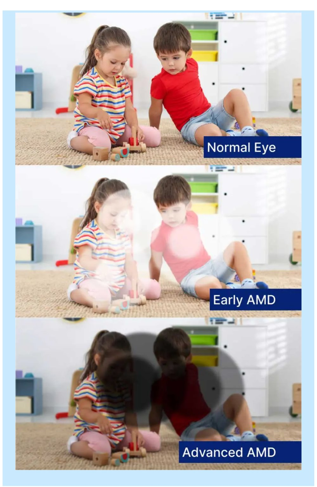
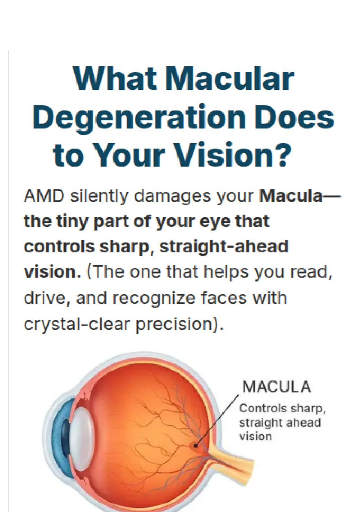
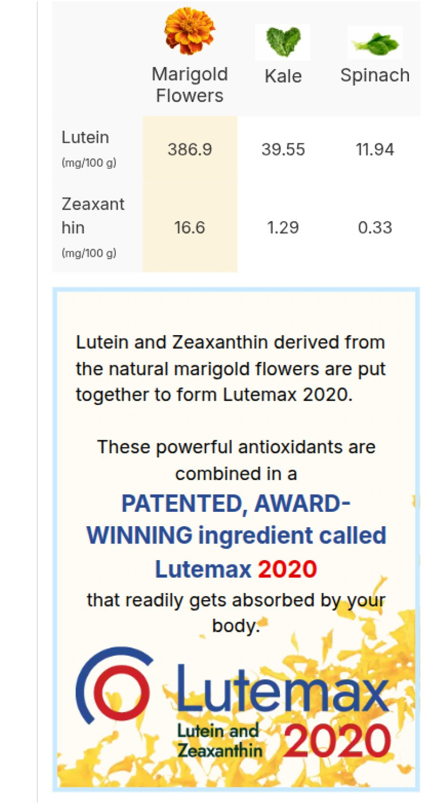
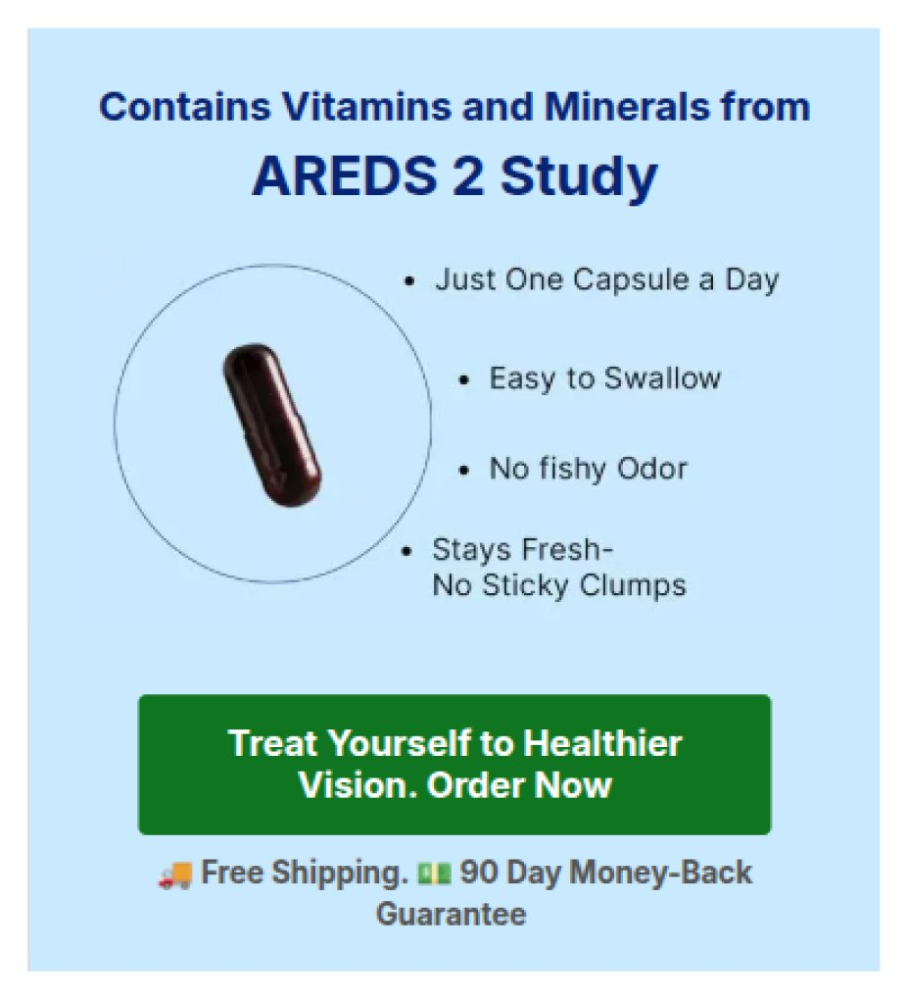
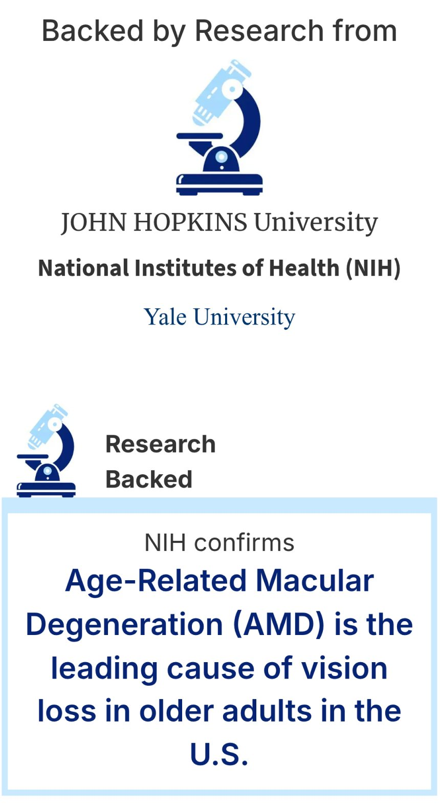
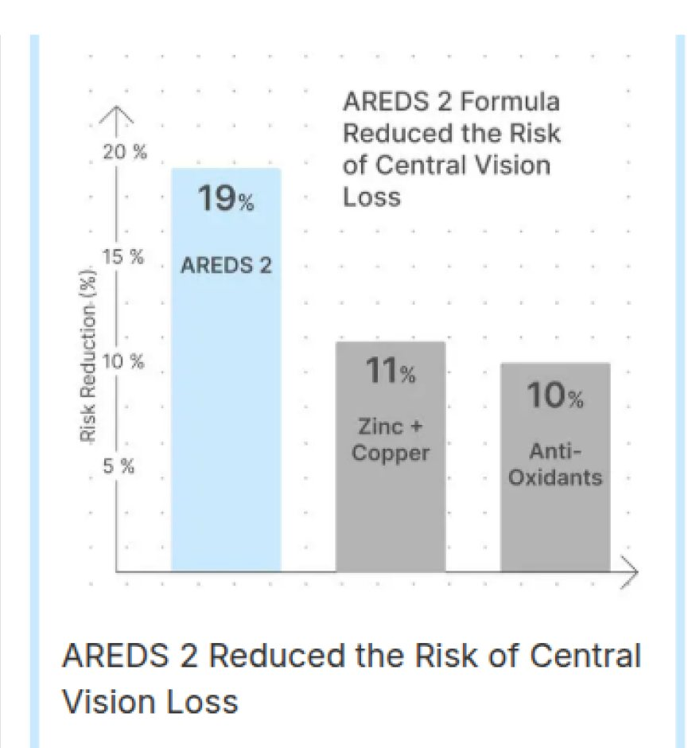
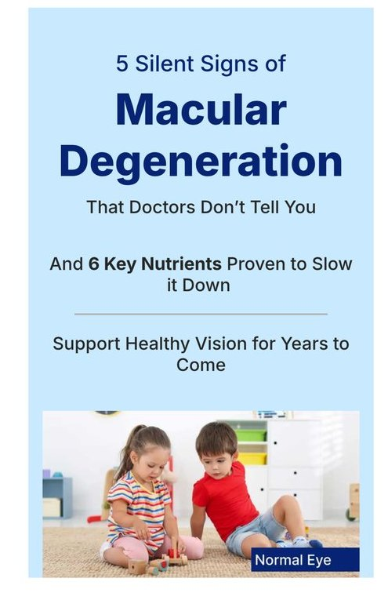
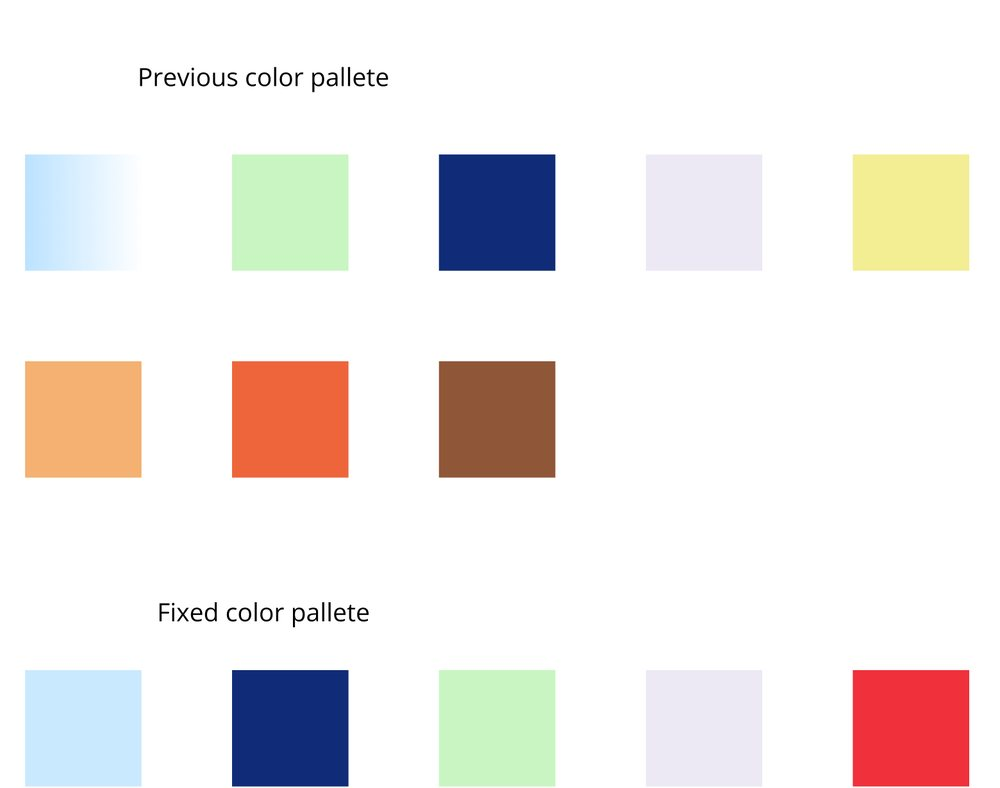

Strong product, right audience.
ViewRyt is an eye supplement formulated by TAE scientists, inspired by the industry-standard AREDS 2 formula for macular health.
TAE has strong targeting for women 50+ in the US as a natural skincare brand, and the product was deemed a strong fit.
The old pages (NLP7 and earlier) converted below 1.5% — and lost money on every dollar of ad spend.
ViewRyt carries the full AREDS 2 formula — the NIH clinical standard shown to reduce advanced Age-related Macular Degeneration (AMD) is a common eye disease that damages the macula, the central part of the retina responsible for sharp, straight-ahead vision. risk by 25%. A genuinely strong product.
A single heading size throughout, body type larger than the subhead, and all attention pulled to one photo.
Dense information hit visitors before the first CTA — thinking hard before caring at all.
The imagery represented the target audience but never connected emotionally — it read as synthetic stock, not lived experience.
Comic illustration sat beside photography, shadows appeared at random, and the color palette had no through-line.


Four rules for the redesign, copy untouched.
Keeping the copy identical made the test honest: whatever moved, design moved it. NLP8 was built on four principles.
Hook emotionally, then educate — never the reverse.
Design the moment of choice, not just the layout around it.
Establish authority before making a single claim.
Detail arrives exactly when the visitor is ready for it.
Four principles that did the heavy lifting.








Walk the page. Every section has a job.
This is the shipped NLP8 page, exactly as it runs in production. Keep scrolling — the phone walks through the full page while the notes explain the intent behind each section.


"5 Silent Signs of Macular Degeneration" opens on the fear of losing independence, then explains why vision degrades after 40. Attention is earned before a single claim is made.
NIH, 10 years, 4,203 participants — then each nutrient card answers "why it matters." Authority arrives before any brand talk.
ViewRyt only appears once the argument is complete — entering as the obvious answer, with expert endorsements beside it.
Verified reviews, a price-anchored comparison and the 90-day guarantee cluster around the click. The decision moment is designed, not decorated.
From losing money on every visit to profitable.
Identical copy, identical product, identical traffic source — only the design changed. The page crossed from spending more than it returned to returning more than it spent. And the compounding effect: Meta's algorithm answered that performance by pushing far more budget through the new page than the old one ever earned.
Where this page goes next.
Raise average order value. The page ran with a single-bottle pack only. The clearest next lift is bundles — and priming for them well before the offer, so the larger pack arrives as the sensible choice rather than the expensive one.
That means framing supply duration in the education section, then a price-per-day comparison at the point of decision, so the bundle is read as fewer refills and a lower daily cost, not a bigger bill.